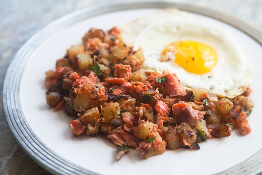

Smoked Salmon Hash

The perfect Sunday breakfast
This is a great Sunday breakfast. A hearty meal that everyone will love. Let me know in the comments what you think about the flavor!
Ingredients
- 2 tablespoons extra virgin olive oil
- 1 -2 pounds Yukon gold potatoes, peeled and diced into quarter inch cubes
- 1 cup chopped onion
- 4 ounces hot-smoked salmon, broken into flakes
- 2 tablespoons sour cream
- 2 teaspoons prepared horseradish
- 1 teaspoon Dijon mustard
- 2 tablespoons chopped chives or green onion greens
- 1 tablespoon minced fresh parsley
- Salt and black pepper to taste
Steps
- Heat the oil in a large cast iron frying pan on medium heat. Add the potatoes and onions, stirring to coat with the oil. Spread the potatoes and onions out in an even layer in the pan. Sprinkle the potatoes with a little salt.
- Turn the potatoes over every 2-3 minutes, until the potatoes are mostly browned and cooked through, about 15-20 minutes.
- While the potatoes are cooking, gently mix the salmon, sour cream, horseradish, mustard, chives and parsley into a bowl.
- When the potatoes are done, turn off the heat and fold in the salmon mixture until it is well combined. Add salt and pepper to taste. Let this sit in the pan for 5 minutes before serving; the carryover heat in the pan will heat everything through.
- Top with dippy eggs if desired